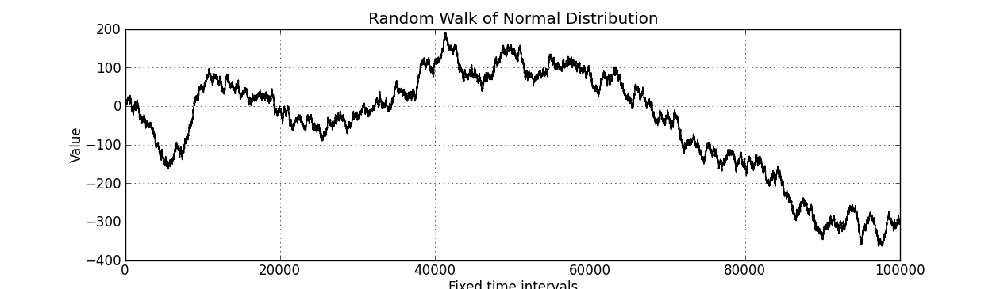
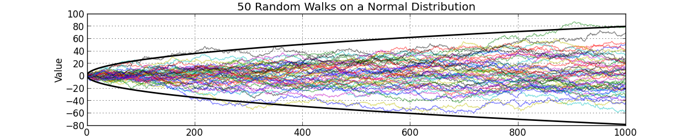
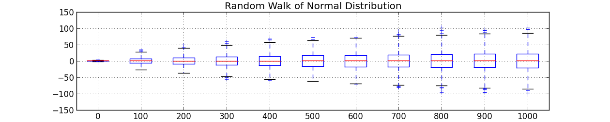
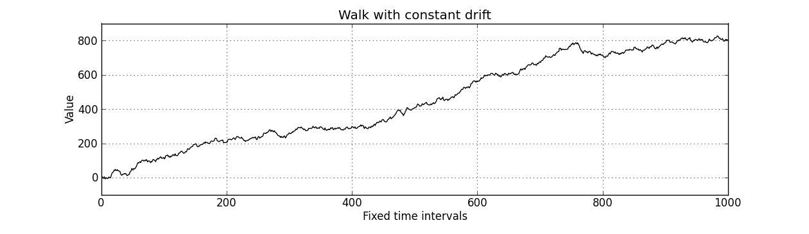
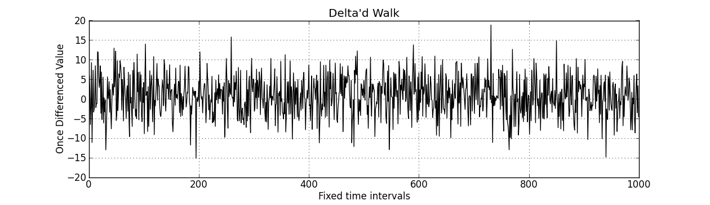

Sun 08 September 2013
By Jake Mick
In data .
tags: time-series data python
Problem setting
A time series is a ordered set of observations. The observations occur at fixed
intervals. Many phenomena are thought of as time series. A few obvious examples
are gross domestic product, the stock price of Apple, electrical current through
a resistor and Yosemite's Geyser eruptions. Less obviously, audio and text can
be thought of as time series.
Why I'm writing this
Recently I've been learning about time series modelling. A lot of literature
exists on the subject, with varying formality and intended uses. As with some
statistics literature, it is not clear how to apply a given concept to data.
I've included code for this reason. This isn't algorithmic recipes. The
intent of this document is to gift you with an intuition behind ideas. Basically
this is a casual time series analysis text. This document is not a treatise on
Hilbert space. This document is not a collection of copy-paste recipes.
This is the document I wish google gave me, you may hate it. $\ddot\smile$
Random Walk Part One
Consider the eponymous coin-flip. $P(tails) = P(heads) = 1/2$. Suppose we kept
a running tally of heads - tails, over 100,000 coin-flips. One such realization
of the tally is below.
More formally, the coin-flip is $X \sim Bin(1, 0.5)$ and the tally is
$W_t = \sum\limits_{i=1}^t x_i$
The underlying process is termed a random walk . It is the simplest example,
as measured by the code golf needed to produce it. A random walk can come
from any distributions. A realization of a random walk on $X \sim N(0, 1)$ is below.

In this introductory text we will only deal with Markov random walks, ones in which
$W_t$ depends only on $W_{t-1}$. This simplifies the analysis, but be aware that
the literature on random walks travels very far from this text. Other interesting
properties can be imbued into a random walk that are outside the scope of this
text.
The code used to produce the above plots is below.
import numpy as np
from matplotlib import pyplot as plt
def random_walk_bin ( n = 100000 ):
np . random . seed ( 10 )
x = np . random . randint ( 0 , 2 , n )
x [ x == 0 ] = - 1
walk = np . cumsum ( x )
plt . plot ( walk , 'k' )
plt . grid ()
plt . xlabel ( "Fixed time intervals" )
plt . ylabel ( "Heads - Tails" )
plt . title ( "Random Walk of Coin-Flipping" )
plt . show ()
def random_walk_norm ( n = 100000 ):
np . random . seed ( 10 )
x = np . random . normal ( 0 , 1 , n )
walk = np . cumsum ( x )
plt . plot ( walk , 'k' )
plt . grid ()
plt . xlabel ( "Fixed time intervals" )
plt . ylabel ( "Value" )
plt . title ( "Random Walk of Normal Distribution" )
plt . show ()
What is a Time Series?
Stepping back for a moment note that our walk $W$ is indexed by time point $t$.
It is the case for all time series that $t \in T \subset R$. However, if
$t \in T \not\subset R$ then other theory and models are needed. An interesting
case outside the scope of this discussion arises when $t \in T \subset R^2$,
which is useful for spatial analysis. Models of this class can be useful in
predict house prices based on latitude and longitude. Spatial analysis is
distinct from time series by the index vector, not the shape of the data. For
example, if we have a collection of correlated walks, we would model them by
multivariate time series methods.
The examples used within this document are stochastic processes , which
is a formal way of saying that the evolution of a time series is probabilistically
determined. This contrasts the time evolution of a solution to a differential equation,
in which our response is deterministic.
Random Walk Part Two
Random walks are easily studied phenomena. Suppose we have a $W$ on $N(\mu, \sigma)$.
$W_1 \sim N(\mu, \sigma)$ and $W_2 \sim N(\mu + \mu, \sigma + \sigma)$. In the case
$\mu = 0, \sigma = 1$ we have $W_2 \sim N(0, 2)$. More generally, for any walk
with a zero mean, $W_t \sim N(0, t\sigma)$.
We can empiricize these results using the random number generator.
Shown below are 50 realizations of a Gaussian walk, plotted with $\pm 2.5 \sqrt t$

Shown below are boxplots of 1000 realizations of a 1001 step Gaussian walk

The important realizations are that though the mean value of the walk is 0,
the variance is unbounded. An unbounded variance is an undesirable property
in time series analysis. In the next section we'll learn how to rectify this
behavior in the random walk case.
The code for the above plots is below.
def random_walk_dist ():
np . random . seed ( 10 )
w = np . cumsum ( np . random . normal ( 0 , 1 , size = ( 1000 , 1001 )), axis = 1 )
plt . plot ( w [: 50 ] . T , alpha =. 5 )
plt . title ( "50 Random Walks on a Normal Distribution" )
plt . xlabel ( "Fixed time intervals" )
plt . ylabel ( "Value" )
plt . grid ()
plt . plot ( 2.5 * np . sqrt ( np . arange ( 1001 )), 'k' , linewidth = 2 )
plt . plot ( - 2.5 * np . sqrt ( np . arange ( 1001 )), 'k' , linewidth = 2 )
plt . show ()
plt . title ( "Random Walk of Normal Distribution" )
plt . boxplot ( w [:, :: 100 ], bootstrap = 1000 )
plt . grid ()
plt . xticks ( np . arange ( 1 , 12 ), np . arange ( 1001 )[:: 100 ])
plt . show ()
Differencing
Define the backshift function $B(x_t) = x_{t-1}$. Define the difference function
$\Delta x_t = (1 - B) x_t = x_t - x_{t-1}$. Repeated application follows
the rules of polynomial expansion $\Delta^2 x_t = (1 - B)^2 x_t = x_t - 2 x_{t-1} + x_{t-2}$
In the case of our Gaussian random walk, applying $\Delta$ to $W$ returns the
series to the original values. In Python the following will print True.
x = np . random . normal ( 0 , 1 , 100 )
w = np . cumsum ( x )
print ( np . allclose ( w [ 1 :] - w [: - 1 ], x [ 1 :]))
Though toyish in appearance, differencing is a fundamental preprocessing step
for many applications of time series analysis. Suppose we defined a time series
as $Q_t = Q_{t-1} + \mu + \epsilon$, where $Q_0 = 0$, $\mu$ is constant and
$\epsilon \sim N(0, 1)$. By induction it can be shown that $\Delta Q$ has a constant
mean and a bounded variance. These properties, along with third property
introduced in the following section simplify time series analysis.
Here is a realization of the above model.

Here is the same model once differenced.

A simple way to implement differencing in python is below.
class difference :
def __init__ ( self , power = 1 ):
self . power = power
def fit_transform ( self , x ):
self . data = x
self . difference = self . data . copy ()
for i in xrange ( self . power ):
self . difference [ 1 :] = self . difference [ 1 :] - self . difference [: - 1 ]
return self . difference
def inv_transform ( self , x ):
for i in xrange ( self . power ):
x = np . cumsum ( x )
return x
The following code produces the above plot.
def differ_example ():
# Generate time series model
np . random . seed ( 123 )
l = 1000
const_drift = np . cumsum ( np . array ([ 1.0 ] * l ))
rw = np . cumsum ( np . random . normal ( 0 , 5 , l ))
x = rw + const_drift
# Plot the time series
plt . subplot ( 2 , 1 , 1 )
plt . plot ( x , 'k' )
plt . xlabel ( "Fixed time intervals" )
plt . ylabel ( "Value" )
plt . grid ()
plt . title ( "Walk with constant drift" )
# Plot the once differenced time series
plt . subplot ( 2 , 1 , 2 )
model1 = difference ( power = 1 )
res1 = model1 . fit_transform ( x )
plt . plot ( res1 , 'k' )
plt . xlabel ( "Fixed time intervals" )
plt . ylabel ( "Once Differenced Value" )
plt . grid ()
plt . title ( "Delta'd Walk" )
plt . show ()
Ignoring numerical instabilities for higher powers, the following code prints
True for any x of shape $(n,)$ for any power.
x = np . cumsum ( np . random . normal ( 0 , 1 , 100 ))
model = difference ( power = 2 )
diff_x = model . fit_transform ( x )
undiff_diff_x = model . inv_transform ( diff_x )
print ( np . allclose ( undiff_diff_x , x ))
Autocorrelation
Intuitively, we can think of the autocorrelation function of a well-behaved
time series as mapping a univariate time series to the correlation between
lags of the time series.
Define the autocorrelation function
$\gamma(s, r) = \frac{E[(X_s - EX_s)(X_r - EX_r)]}{\sigma_s \sigma_r}$
where $ s, r \in T \subset R$.
Well-behaved is precisely defined.
If $EX_r = EX_s = \mu$ and $\sigma_r = \sigma_s = \sigma$ then the above
equation reduces to $\gamma(s, r) = \frac{E[(x_s - \mu)(x_r - \mu)]}{\sigma^2}$.
Suppose that $\gamma(s,r) = \gamma(s+t,r+t)$.
This is equivalent to saying $\gamma(s, r) = \gamma(s-r, 0)$, which can be
rewritten as $\gamma(h) = \frac{E[(x_{t+h} - \mu)(x_t - \mu)]}{\sigma^2}$.
In English this means that our autocorrelation function is dependent only on the lag.
Where we might see noise the autocorrelation function captures hidden structure.
If we remove the variance divisor, we get the autocovariance function. However
this change whacks up our interpretation, so we'll pretend it doesn't exist. Some
literature uses these terms interchangably, but technically the autocovariance
function is unnormalized.
Importantly this function is invariant to left-right translation of the time series.
It captures a deep truth about the observed signal.
Several methods exist for the computation. Some are based on the FFT, while others
are a simple loop.
Adapted from the Pandas library is the following function.
def autocorrelation_slow ( x ):
assert ( len ( x . shape ) == 1 )
mean = x . mean ()
var = x . var ()
n = float ( x . shape [ 0 ])
def corr ( lag ):
return (( x [: n - lag ] - mean ) * ( x [ lag :] - mean )) . sum () / ( n * var )
return map ( corr , np . arange ( 1 , n + 1 ))
Adapted from the Statsmodels library is the following function.
def autocorrelation_fast ( x ):
assert ( len ( x . shape ) == 1 )
n = s [ 0 ]
x -= x . mean ()
trans = np . fft . fft ( x , n = n * 2 )
acf = np . fft . ifft ( trans * np . conjugate ( trans ))[: l ]
acf /= acf [ 0 ]
return np . real ( acf )
import numpy as np
from matplotlib import pyplot as plt
def lagmat ( tseries , lag = 2 ):
input_shape = tseries . shape
assert ( len ( input_shape ) == 1 )
n = input_shape [ 0 ]
values = np . concatenate (( tseries [ - 1 : 0 : - 1 ], tseries ))
a , b = np . ogrid [ lag : n , n - 1 : n - lag - 2 : - 1 ]
Tminus = values [ a + b ]
return Tminus [:, 0 ], Tminus [:, 1 :]
def main ():
go_through ()
if __name__ == '__main__' :
main ()
-- JakeMick